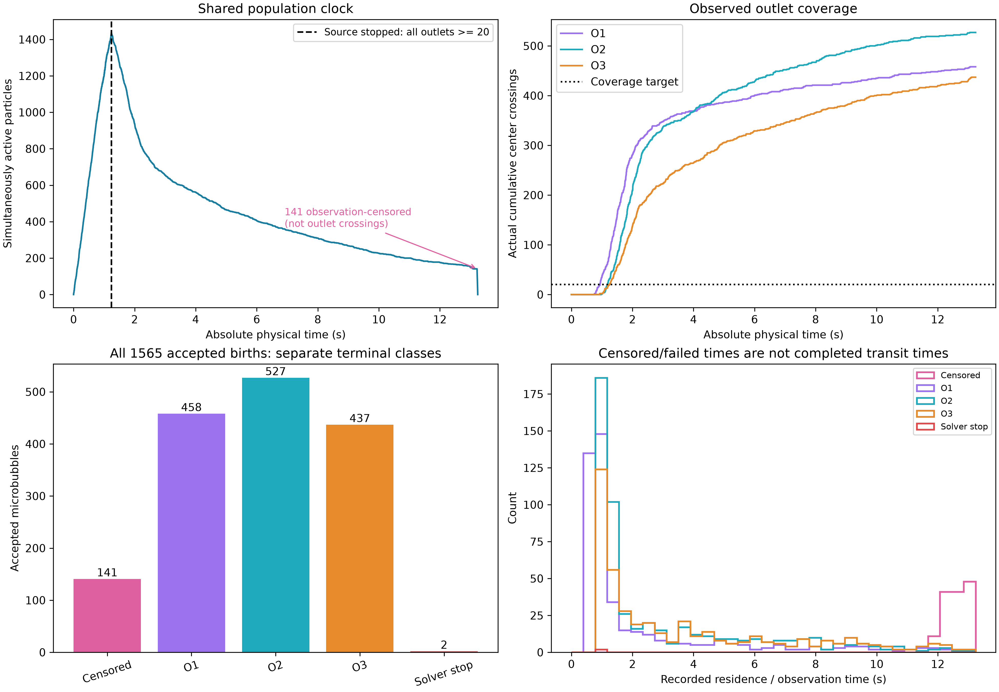
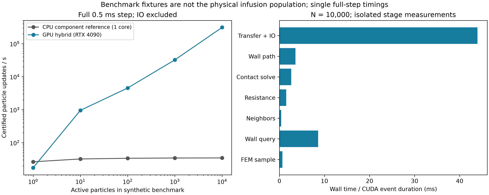

BraVa continuous microbubble perfusion
C = 4e9 m^-3 · Q = 18 mL/min · nominal dt = 0.5 ms
Accepted births: 1565 · Actual exits O1/O2/O3: 458 / 527 / 437 · Solver failures: 2 · Observation-censored: 141.
Stop infusion at 1.240816 s, after every outlet reaches 20 crossings. Observation ends at 13.240816 s. Failed or censored tracks are not completed outlet transits or evidence of physiological trapping.
Chinese validation report · Reproduction commands · Trajectory catalog (CSV) · Independent audit
Population accounting

Compute benchmark

Synthetic noninteracting benchmark states; not the physical infusion population. CPU reference is single-core.